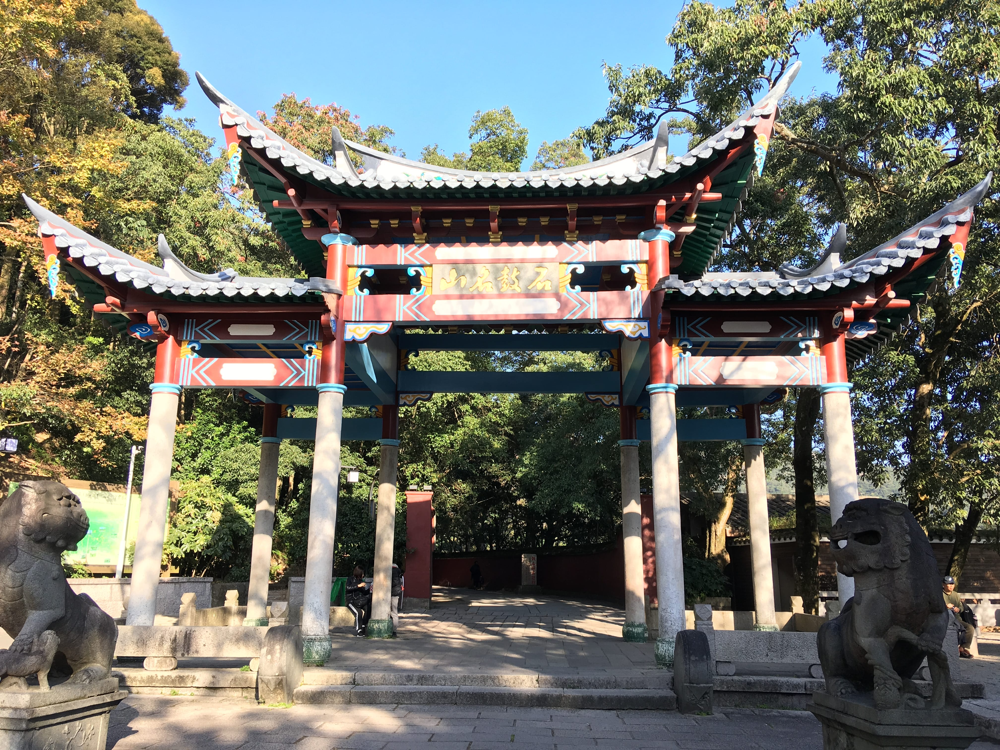
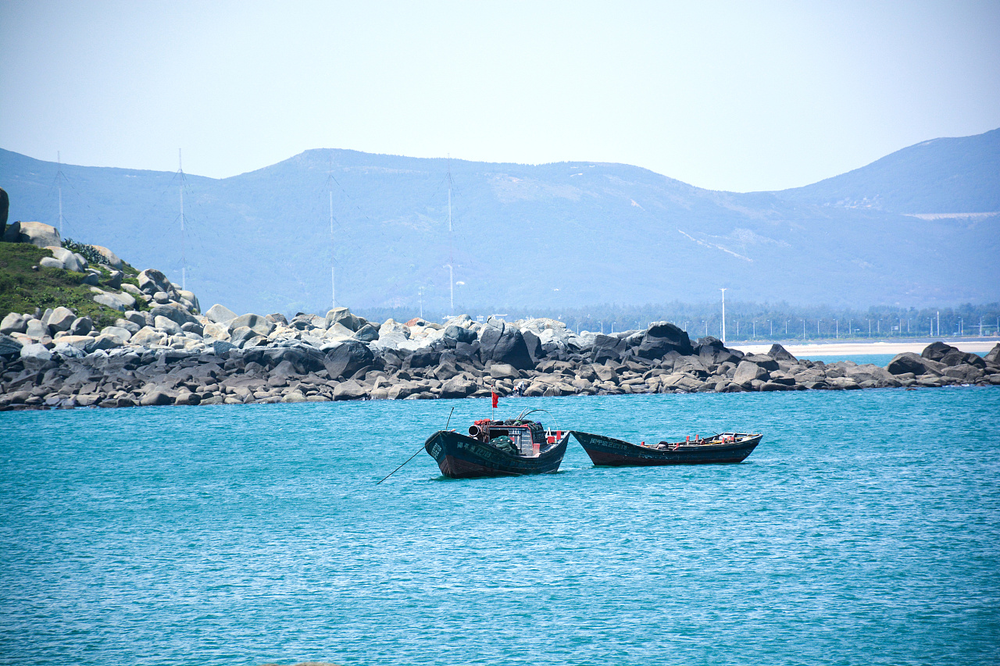

三坊七巷是福州的历史文化发源地，由三个坊和七条巷组成，是福州著名的景点。这里曾是林则徐、严复等名人故居，古色古香的建筑和牌匾招牌让人感受到强烈的古今文化碰撞。游客可以品尝当地特色小吃如永和鱼丸、同利肉燕，或购买文创产品如三坊七巷油纸伞作为纪念。

鼓山位于福州市东郊，是福建十大名山之一，被誉为福州的“后花园”。其主峰海拔969米，总面积48平方公里，分为鼓山、鼓岭、鳝溪、磨溪、凤池白云洞五大景区。相传，山巅有一巨石平展如鼓，每当风雨之际，便发出隆隆的声音，因此得名。

平潭岛是福建省福州市的一个著名景点，被誉为“中国的马尔代夫”。岛上拥有美丽的海景和独特的自然风光，如龙凤头海滨浴场、北港村、最美环岛路和长江澳风车等。特别是四月份，海面上会出现独特的“蓝眼泪”现象，吸引了大量游客前来观赏。此外，平潭岛的沙滩纯净、海水清澈，是游客休闲度假的好去处。